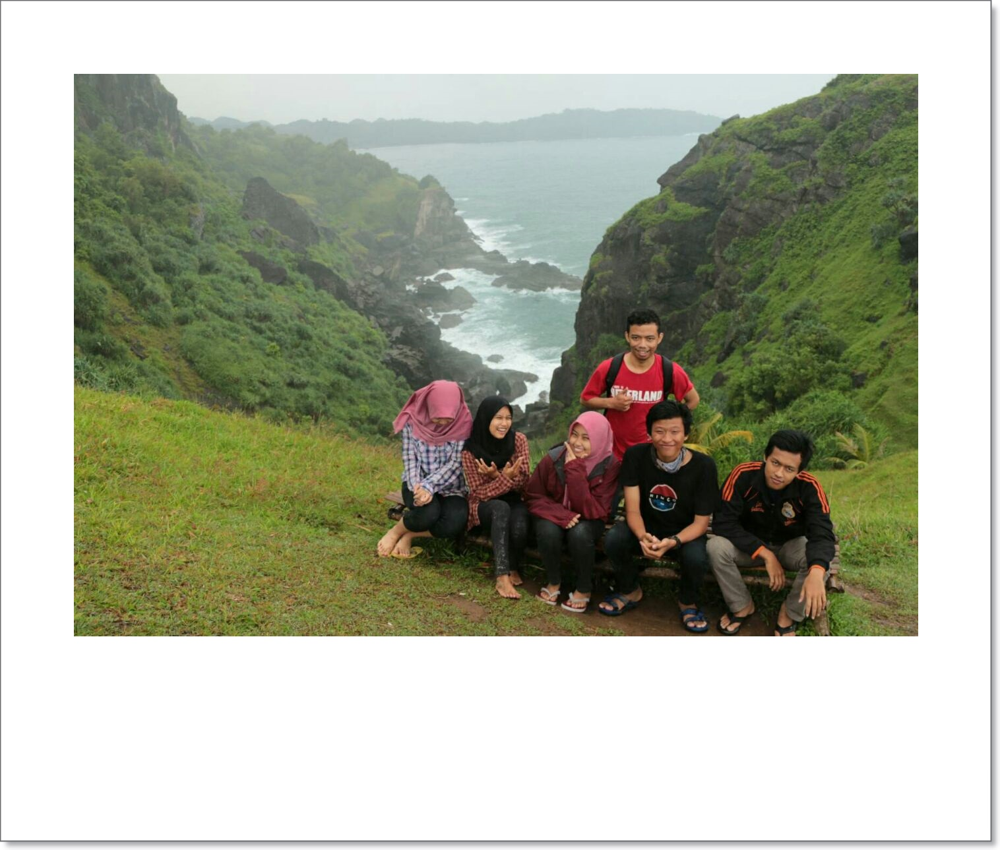
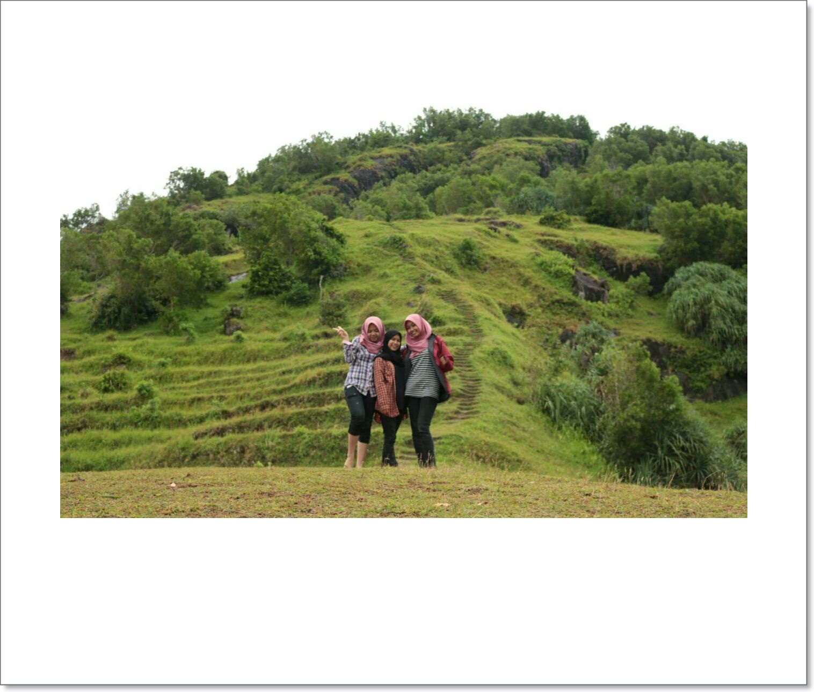
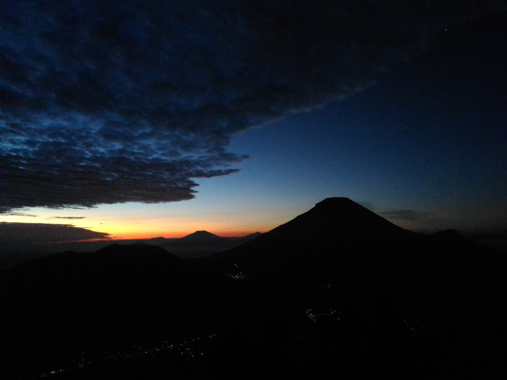
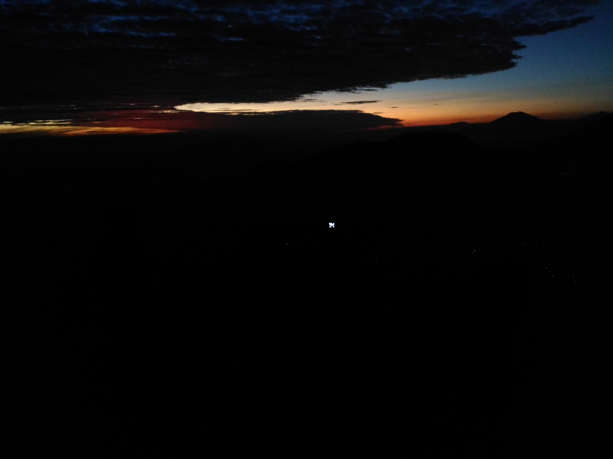
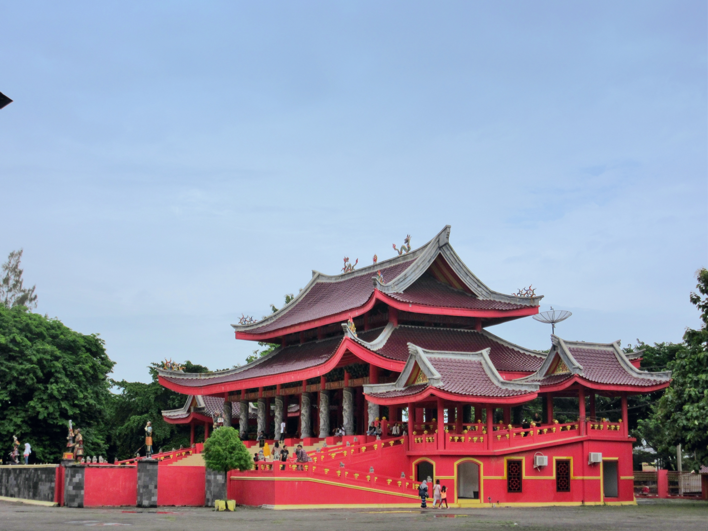

Places that I have ever visited :
In this web I will share some information about the places, click the list down below.
CAMP GROUND BUKIT PENGILON
 
Mounts present the sights are still very natural, and increasingly more are springing up like beach this one Pantai Bukit Pengilon or Pengilon Hill. Pengilon Hill Beach is located within walking distance of beaches that had long been more famous like Watu Lumbung and also on the west side there is the beach Banyu Nibo. Pengilon Hill located at Ngelo, village of Balong, Girisubo, Gunung Kidul, Yogyakarta. From the city of Yogyakarta is located approximately 80km and Pengilon Hill Beach can be reached by private vehicle approximately 2 hours journey. Pengilon Hill beach is unlike other beaches in Gunung Kidul has a vast expanse of white sand, but here are just a hill with a carpet of green grass and on the side of the south is the vast sea.
GOLDEN SUNRISE MT. SIKUNIR
 
Dieng Sikunir hill, famous for its golden sunrise. Even many who call Sikunir hill is the most beautiful spot in Indonesia to enjoy the golden sunrise. Sikunir maybe just a small hill, but many impressions to be had here, especially with the beauty of the Golden sunrise. About Sikunir Dieng, Sikunir Dieng has a height of 2,463 meters above sea level. The altitude is quite moderate. However, due to basecamp hill climb Sikunir are in the Dieng plateau with an elevation of more than 1500 meters above sea level makes the trip from base camp to the summit Sikunir not take long. Basecamp Sikunir Sembung in the village which is the highest village on the island of Java
KUIL SAM POO KONG SEMARANG


Sam Poo Kong also known as Gedung Batu Temple, is the oldest Chinese temple in Semarang, Central Java, Indonesia. Originally established by the Chinese Muslim explorer Zheng He (also known as Sanbao), it is now shared by Indonesians of multiple religious denominations, including Muslims and Buddhists, and ethnicities, including Chinese and Javanese
PAGODA AVALOKITESVARA SEMARANG

The most famous icon of the Bodhgaya temple is called regular or Avalokitesvara Pagoda Pagoda pagoda Metakaruna which means love and affection. This pagoda was erected to honor the Goddess Kwan Im Po Sat Sie believed by Buddhists as the goddess of love. Pagoda Avalokitesvara has 45 meters high and consists of 7 levels narrowed to atasujuh this level serve as a sanctity that would be achieved by a hermit after reaching the seventh level. Pagoda Avalokitesvara is synonymous with a blend of red and yellow color typical of China building was inaugurated by MURI as the highest pagoda in Indonesia in 2006.